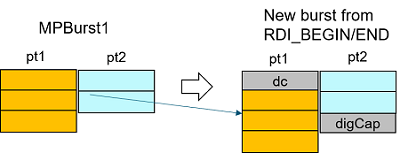

rdi.port(TA::MULTI_PORT).func()
This function allows multi-port labels to be combined to form a new burst. It is used for dynamic mode in the func() class only.
Syntax
rdi.port(TA::MULTI_PORT).func();
Example
Multi-port burst with .port(TA::MULTI_PORT):
RDI_BEGIN();
rdi.port("pt1").dc().pin("dig").vForce(1 V).execute();
rdi.port(TA::MULTI_PORT).func().burst("MPBurst1").execute(); // no port
rdi.port("pt2").digCap().pin("dig2").samples(8).execute();
RDI_END();

Functional changes
- Introduced in SmartRDI 7.10.0